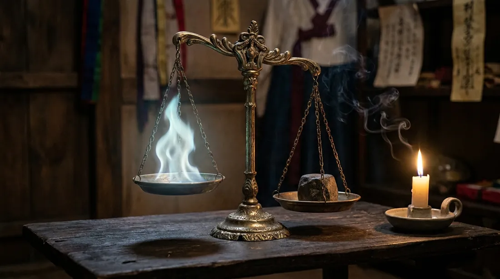
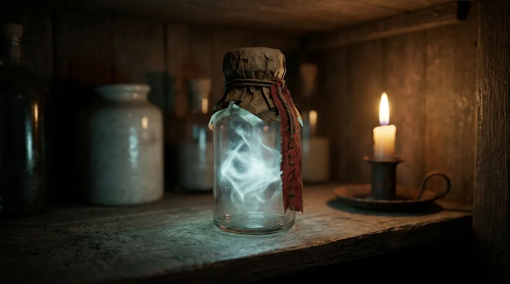
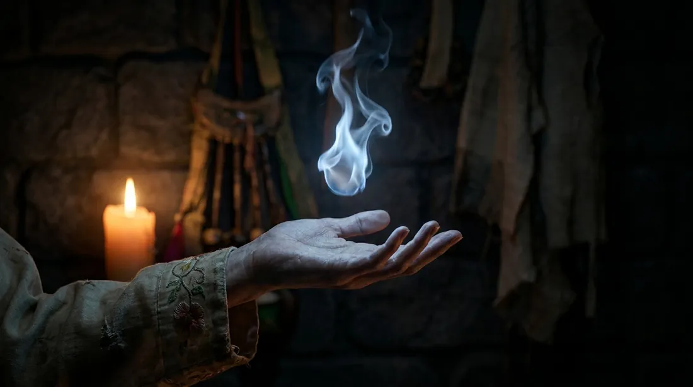
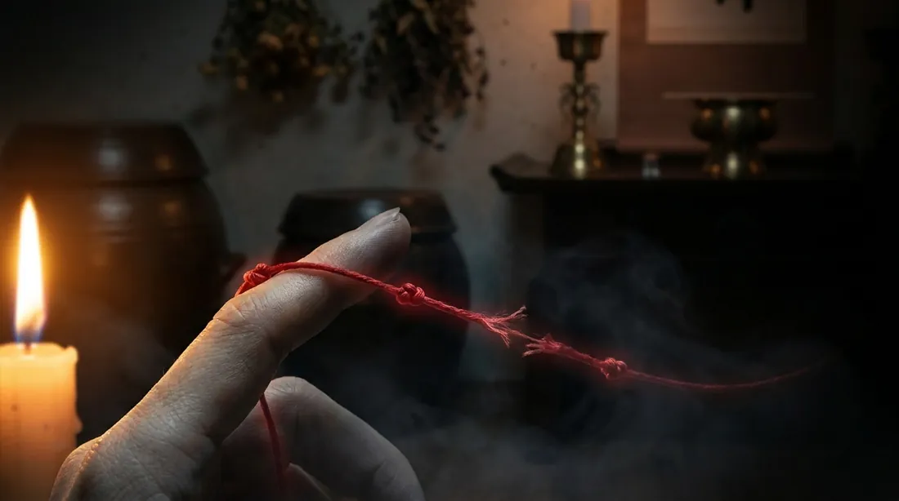
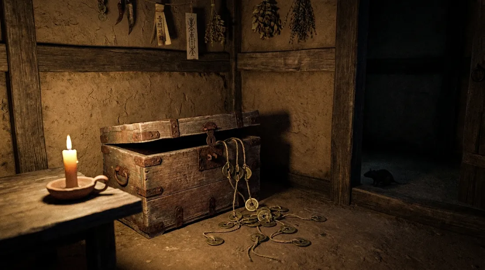
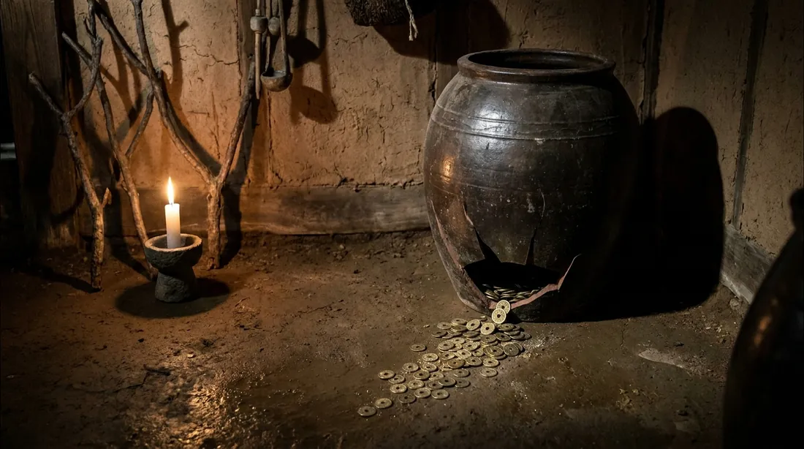

카테고리 첫 장 상단에 들어갈 이미지 · 이미지 바로 아래에서 본문 시작 · 번호로 골라주세요 (예: "혼 2번, 재물 1번, 대운 3번")

놋쇠 저울 위 푸른 혼불 vs 검은 돌 — '혼의 감정서' 컨셉 직결

부적으로 봉한 유리병 속 혼불 — 수집당한 혼의 느낌

창백한 손 위에 뜬 푸른 불꽃 — 귀곡이 혼을 들여다보는 느낌

손가락에 묶여 어둠으로 뻗는 붉은 실 — 기존 확정본

엽전이 흘러넘치는 궤짝, 구석에 쥐 실루엣 — '곳간의 쥐' 장과 직결
붉은 끈의 엽전 다발, 한 줄은 떨어지기 직전 — 긴장감

바닥 갈라진 옹기에서 새는 엽전 — '새는 돈' 상징
모래 대신 먹물이 흐르는 모래시계 — '아직 마르지 않은 먹물'과 직결
세월이 장을 넘기는 느낌 — 역동적
칠흑 강물을 떠가는 등롱 하나 — 인생의 흐름, 서정+음산